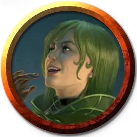

Профессор роста Визерблума
Witherbloom Professor of Growth
Маленький или Средний Гуманоид (Друид), любое мировоззрение

Класс Доспеха 13 (шкурный доспех)
Хиты 112 (15к8 + 45)
Скорость 30 футов
| мод | спас | ||
|---|---|---|---|
| СИЛ | 11 | +0 | +0 |
| ЛОВ | 13 | +1 | +1 |
| ТЕЛ | 16 | +3 | +6 |
| мод | спас | ||
|---|---|---|---|
| ИНТ | 16 | +3 | +6 |
| МДР | 19 | +4 | +7 |
| ХАР | 13 | +1 | +4 |
Навыки Выживание +7, Магия +6, Медицина +7, Природа +6
Сопротивление урону яд
Иммунитет к состояниям отравление
Чувства пассивное Восприятие 14
Языки Общий, и ещё четыре языка
Опасность 7 (2900 опыта)
Бонус мастерства +3
Действия
Мультиатака. Профессор совершает две атаки Зеленой плетью.
Зеленая плеть. Рукопашная атака заклинанием: +7 к попаданию, досягаемость 30 футов, одна цель. Попадание: 11 (2к6 + 4) колющего урона плюс 7 (2к6) урона ядом и цель должна преуспеть в спасброске Силы Сл 15, иначе будет притянута на 10 футов ближе к профессору.
Использование заклинаний. Профессор накладывает одно из следующих заклинаний, используя Мудрость в качестве базовой характеристики:
• Неограниченно: искусство друидов [druidcraft], уход за умирающим [spare the dying];
• 1/день каждое: высшее восстановление [greater restoration], малое восстановление [lesser restoration], множественное лечение ран [mass cure wounds], бесследное передвижение [pass without trace], рост растений [plant growth], возрождение [revivify].
Призыв аватара природы (Перезаряжается после окончания короткого или продолжительного отдыха). Профессор волшебным образом призывает гроффа [groff]. Грофф появляется в свободном пространстве в пределах 60 футов от профессора, действует как союзник профессора и начинают свой ход сразу после профессора. Профессор может телепатически общаться с этим гроффом, пока он существует. Грофф существует в течение 10 минут, пока он или профессор не умрут, или пока профессор не отпустит его действием.
Описание
Профессора роста питают эссенцию природы с помощью своей магии. Они варят настои растений, грибов, насекомых или других крошечных существ, которые наполнены эссенцией жизни, используя эти настои для подпитки своей магии вместо использования традиционных материальных компонентов. В бою они наполняют своих союзников жизненной эссенцией, заживляя раны и залечивая недуги. Их враги сталкиваются с гневом самой природы, от цепких растений и заколдованных ядовитых лоз до аватаров гнева природы.
Эти профессора учат своих студентов сосредотачиваться на росте естественного цикла жизни и смерти и избегать напрасной траты ресурсов. Они придерживаются философии, согласно которой процветающая система приносит пользу всем.
Учёные визерблума
Факультет Визерблум изучает магию, присущую естественному циклу жизни и смерти. Профессора Визерблума подходят к философии с разных сторон, причем одна методология фокусируется на увядании, а другая - на росте.